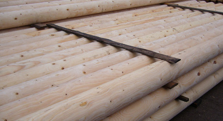
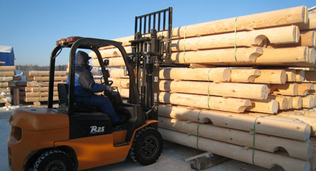
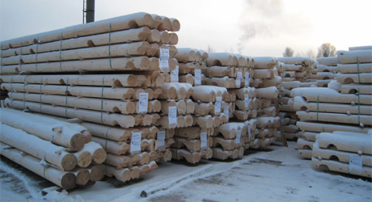
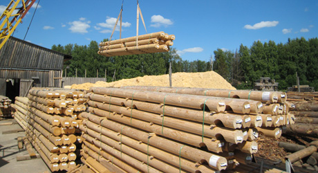
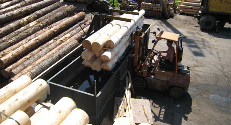

Производство
Наша компания является официальным дилером "Деревянное Домостроение и К", которая имеет собственное компьютеризированное производство оцилиндрованного бревна в Кировской области. Мы предлагаем оцилиндрованное бревно диаметром 180-340мм, изготавливаемое из высококачественной древесины хвойных пород северных районов. Выбору исходного сырья нами уделяется особое, пристальное внимание. Древесина перед обработкой в обязательном порядке сортируется, исходя из размеров диаметра и минимального изгиба заготовки стандартной длины.
Компания Зеленый Дом стремится уделяет большое внимание экологичности производства. Для нас важнейшее качество дома — это его естественность. Вся продукция изготовлена из натуральных природных материалов и не оказывает вредного воздействия на организм человека. В отличие от других строительных материалов, дерево дышит. Поэтому в наших домах поддерживается естественный микроклимат и оптимальная влажность воздуха.
Оцилиндрованное бревно изготавливается на современных станках токарного типа, что позволяет нам гарантировать постоянство размеров и высокую гладкость поверхности предлагаемой нами продукции.
 
Для изготовления деталей для деревянного дома или бани оцилиндрованное бревно раскраивается на нужную дину и происходит нарезка чашек для деталей сруба. После проверки, происходит упаковка, что предотвращает порчу бревна при разгрузках, погрузках, транспортировки и хранении бревна. Все упаковки с бревном маркируются, что значительно упрощает поиск нужной позиции при монтаже сруба. Монтаж дома можно начинать с поставкой первой партии, так как выпуск продукции начинается строго с первых рядов и далее по позврастающей.
 
Оцилиндрованное бревно имеет естественную влажность и в тёплое время года обрабатывается средством для защиты древесины от биоповреждений. В качестве антисептиков используются хорошо себя зарекомендовавшие материалы ведущих производителей, способные защитить оцилиндрованное бревно от разрушений на протяжении длительного времени. Обработка происходит методом погружения бревна в ванну с антисептирующим составом. Мы применяем антисептик на водной основе, что безопасно и для бревна и для здоровья человека.


Передовые технологии по обработке бревна дают возможность не только обеспечить сохранность и естесственное очарование дерева, но и значительно повысить внешнюю привлекательность постройки. Ознакомиться подробнее с образцами оцилиндрованного бревна можно в любое время у нас в офисе или на любой из действующих строительных площадке нашей компании.
Более подробно о производстве оцилиндрованного бревна в Кировской области вы можете прочитать на официальном сайте нашего дилера www.43b.ru